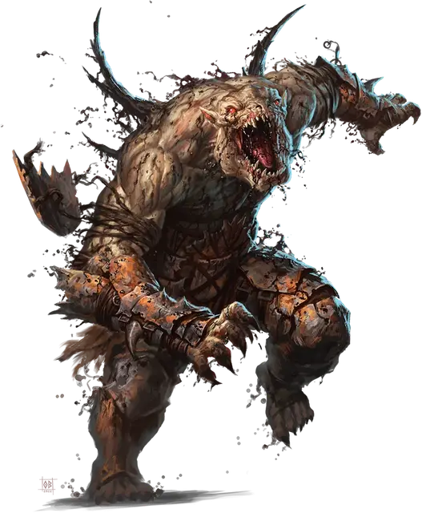

Демоданд фарасту
Farastu Demodand
Среднее Исчадие, нейтрально-злое

Класс Доспеха 17 (природный доспех)
Хиты 195 (26к8 + 78)
Скорость 40 футов, лазая 40 футов
| мод | спас | ||
|---|---|---|---|
| СИЛ | 20 | +5 | +5 |
| ЛОВ | 13 | +1 | +5 |
| ТЕЛ | 16 | +3 | +3 |
| мод | спас | ||
|---|---|---|---|
| ИНТ | 8 | −1 | −1 |
| МДР | 12 | +1 | +5 |
| ХАР | 16 | +3 | +3 |
Навыки Восприятие +9, Выживание +5, Скрытность +5
Сопротивление урону огонь, холод
Иммунитет к урону кислота, яд
Иммунитет к состояниям опутанность, отравление, паралич
Чувства тёмное зрение 120 футов, пассивное Восприятие 19
Языки Язык Демодандов, Бездны, Телепатия 120 фт.
Опасность 11 (7200 опыта)
Бонус мастерства +4
Особенности
Неостановимое передвижение. Фарасту игнорирует труднопроходимую местность, и магические эффекты не могут снизить его скорость. Он может потратить 5 футов своего передвижения, чтобы автоматически окончить на себе захват.
Сопротивление магии. Фарасту совершает с преимуществом спасброски от заклинаний и прочих магических эффектов.
Паучье лазанье. Фарасту может лазать по сложным поверхностям, включая потолки, без совершения проверок характеристик.
Действия
Мультиатака. Фарасту совершает две атаки Когтями и одну атаку Укусом.
Когти. . Рукопашная атака оружием: +9 к попаданию, досягаемость 5 футов, одна цель. Попадание: 16 (2к10 + 5) рубящего урона. Если целью является существо Большого размера или меньшее, оно становится схваченным (Сл высвобождения 15, с помехой). У фарасту есть два когтя, каждым из которых можно схватить одно существо.
Укус. . Рукопашная атака оружием: +9 к попаданию (с преимуществом против существа, которое схвачено фарасту), досягаемость 5 футов, одна цель. Попадание: 12 (2к6 + 5) колющего урона плюс 24 (7к6) урона кислотой.
Использование заклинаний. Фарасту накладывает одно из следующих заклинаний, не нуждаясь в материальных компонентах, используя Харизму в качестве базовой характеристики:
• Неограниченно: невидимость [invisibility] (только на себя);
• 1/день каждое: рассеивание магии [dispel magic], туманное облако [fog cloud].
Вызов демоданда (1/день). Фарасту имеет 40-процентный шанс призвать 1 демоданда фарасту [Farastu Demodand]. Призванный демоданд появляется в незанятом пространстве в пределах 60 футов от призывателя, действует как его союзник, и не может призывать других демодандов. Он присутствует в течение 1 минуты, пока он, либо призыватель, не умрут, или пока призыватель не отпустит его действием.
Описание
Фарастусы, также известные как смолистые демоданды, являются наименьшими из демодандов. Эти жестокие Исчадия источают густую, липкую смолу, прилипающая ко всему, к чему прикасается. Высокомерные и жестокие, фарасту доставляет удовольствие мучить тех, кто слабее них. Благодаря своим обострённым чувствам и жестким наклонностям, фарасту иногда работают охотниками, выслеживая тех, кто сбегает из Карцери.
Демоданды
Демоданды, также называемые герелетами, - исчадия ада из Забытых Преисподних Карцери. Давным-давно брошенные в тюремный план за забытые прегрешения, эти жестокие, озлобленные существа назначили себя тюремщиками этого плана. Демоданды яростно защищают несколько известных порталов, ведущих из Карцери, и безжалостно истязают других существ, оказавшихся здесь в ловушке.
Демоданды, которым удается покинуть Карцери, знают, что они обречены вернуться; демоданд, который умирает за пределами Карцери, в мучениях возрождается там, в течении 2к20 дней. Даже те, кто выживает на иных планах, в конце концов оказываются затянутыми обратно, удерживаемые неким планарным поводком.